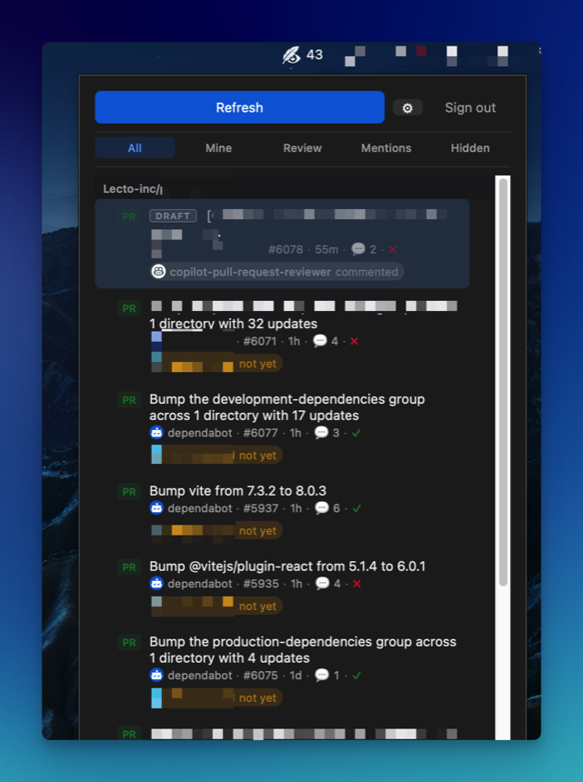

eir
A menubar / system-tray app that watches GitHub PRs and Issues.
A from-scratch alternative to Trailer / Neat — macOS, Windows, Linux.
Latest release: loading…

Features
-
Tray only
No taskbar entry. Lives as a tray icon with a compact 380×520 popup (auto-expands to fill screen height on macOS).
-
GitHub OAuth device flow
Sign in once — the token persists across restarts in a per-user config file.
-
Grouped by repository
PRs and Issues grouped by repo with sticky headers and per-repo unread counts.
-
Filter tabs
All / Mine / Review Requests / Mentions / Hidden, powered by GitHub search.
-
Auto-refresh
Silent background polling, 30s–5min interval, fully configurable.
-
Native notifications
Desktop notifications fire when a new PR or Issue first appears.
-
Unread tracking
macOS shows the count right on the menubar icon. Windows / Linux surface it through the tray tooltip.
-
Global shortcut
Ctrl+Shift+E toggles the popup from anywhere. Rebindable from Settings.
-
Light / dark aware
Template-mode tray icon on macOS and
prefers-color-schemestyling everywhere. -
Auto-update
In-app updater verifies ed25519 signatures and relaunches into the new version — no reinstall needed.
Install
macOS
- Download the
.dmgfor your architecture above. - Open the DMG and drag eir.app into
/Applications. -
Remove the quarantine attribute so Gatekeeper lets it launch (the bundle is ad-hoc
signed — no Apple Developer ID yet):
xattr -rd com.apple.quarantine /Applications/eir.app - Launch eir and sign in with the GitHub device flow.
Subsequent launches — including after the in-app updater swaps the binary — don't need
the xattr step again.
Windows
-
Download
eir_<version>_x64-setup.exe(or the.msi) and run it. - On the SmartScreen "Windows protected your PC" dialog, click More info → Run anyway. The build isn't code-signed with an Authenticode certificate yet.
- Launch eir from the Start menu and sign in.
Token is stored at %APPDATA%\eir\token. A system tray is required — all
stock Windows 10/11 installs have one.
Linux
-
Download
eir_<version>_amd64.AppImageand make it executable:chmod +x eir_*_amd64.AppImage && ./eir_*_amd64.AppImage -
Or install the
.debon Debian / Ubuntu derivatives:sudo apt install ./eir_*_amd64.deb
A system tray is required. On GNOME, install the AppIndicator Support extension if you don't already have one.